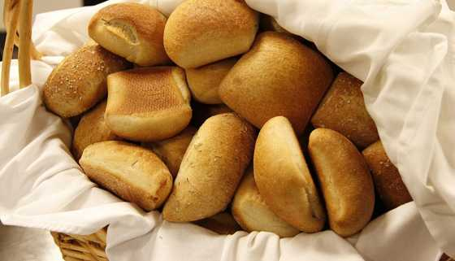
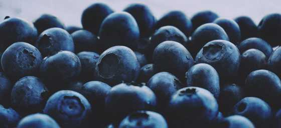

お店のこと
ABOUT
アネロは、植物性の材料でつくるパンと焼き菓子のお店です。2023年11月に上越市本町で初めての店舗を開く前は、約6年間、イベント出店や委託販売を続けてきたと報じられています。
店長の土肥麻希子さんは、卵や乳製品のアレルギーがある人でも、店内のものをすべて食べられるお店にしたいと語っています。甥御さんの食物アレルギーが、きっかけのひとつだったそうです(2023年11月の地域紙記事より)。アレルギーのある人も、パンやスイーツが好きな人も、健康が気になる人も、堅苦しくなく自由に選べる場所を目指しています。
店名の意味は確認できていません。制作側のイメージとして、イタリア語で「輪」を意味する言葉に由来するのでは、と想像しています(未確認)。人が輪になって同じものを食べる、というお店の想いにそっと重ねています。




メニュー
MENU
開店時の記事では、次のような品が紹介されていました(現在の品ぞろえは異なる場合があります)。
- 自家製酵母のパン(季節の果物を使うものも)
- じゃが芋のフォカッチャ(オリーブオイルとローズマリー)
- 上越産おからを使ったガトーショコラ(卵・乳製品・小麦不使用)
- クッキーなどの焼き菓子
価格・営業時間・定休日: 準備中
下の写真はフリー素材のイメージです。




口コミ
VOICE
イメージ例
アレルギーのある子と一緒に、初めて全部のパンから選べました。
ご家族でご来店のお客様イメージ例
酵母の香りがやさしくて、翌朝のトーストも楽しみになりました。
ご近所のお客様イメージ例
ヴィーガンと聞いて構えていたのに、気軽に食べられておいしかったです。
ご来店のお客様口コミは制作側が作成したイメージ例で、実在のお客様の声ではありません。